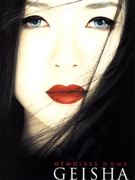
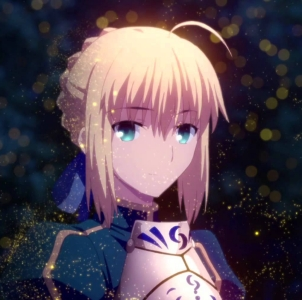

My favorite movies

Mémoires d'une Geisha
Une jeune campagnarde du Japon, Chiyo, et sa sœur Satsu sont vendues par leur père à la tenancière d'une maison de geisha (une Okiya). Les deux sœurs sont rapidement séparées et Chiyo se retrouve confrontée à la sévérité de la maîtresse de maison et à la dureté de la vie d'une apprentie geisha. Elle doit également faire face à l'hostilité teintée de jalousie de Hatsumomo, geisha vedette de la maison qui, par ruse, réussit à la faire reléguer au statut de simple servante.
Mr Robot
Elliot Alderson est un jeune informaticien vivant à New York, qui travaille en tant que technicien en sécurité informatique pour Allsafe Security. Celui-ci luttant constamment contre un trouble d’anxiété sociale et de dépression, son processus de pensée semble fortement influencé par la paranoïa et l'illusion10. Il pirate les comptes des gens, ce qui le conduit souvent à agir comme un cyber-justicier. Elliot rencontre « Mr. Robot », un mystérieux anarchiste qui souhaite le recruter dans son groupe de hackers connu sous le nom de « Fsociety ». Leur objectif consiste à rétablir l'équilibre de la société par la destruction des infrastructures des plus grosses banques et entreprises du monde, notamment le conglomérat E Corp. (surnommé « Evil Corp. » par Elliot) qui, par ailleurs, représente 80 % du chiffre d’affaires d’Allsafe Security.

Fate stay night unlimited blade works
Ce scénario n'est débloqué qu'après avoir fini le scénario FATE, en empêchant Saber d'attaquer Archer. On peut aussi accéder à ce scénario en refusant de coopérer avec Rin dans FATE, mais cela mène inévitablement à une Bad End. L'histoire se concentre sur Rin, Shirō et Archer. Le passé de ce dernier, dont on ne savait rien dans le premier scénario, est ici considérablement développé. Shirō apprend à maitriser ses capacités et parvient même à vaincre plusieurs Servants. Dans ce scénario, Shirō devient beaucoup moins naïf mais veut toujours suivre ses idéaux : les puristes voient en lui la vision d'un adolescent, à mi-chemin entre l'âge adulte et l'enfance. Le premier film et la série de 2014 se basent sur ce scénario.